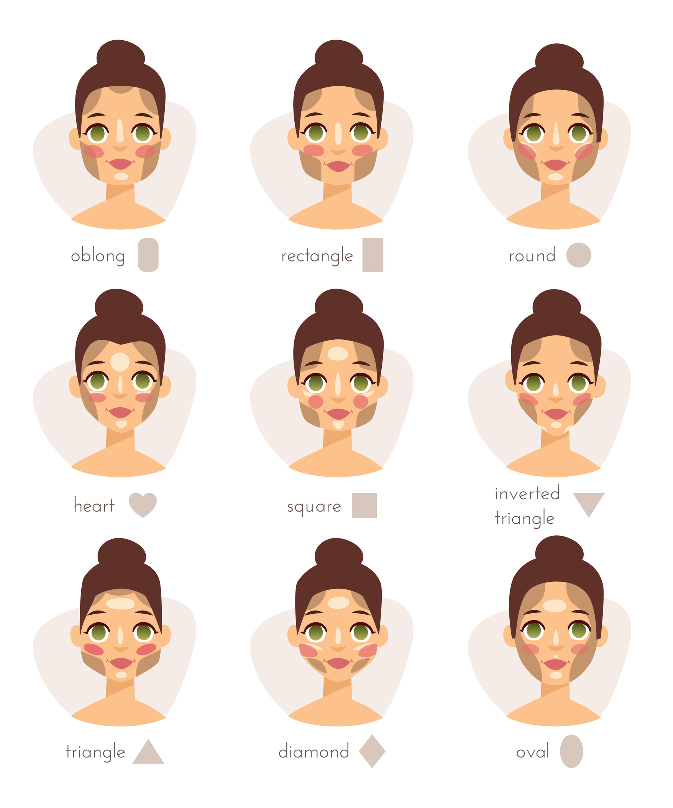

Base para cutis normal La base ideal para el cutis normal es aquella que contiene ingredientes emolientes. Las jóvenes de piel normal pueden permitirse además el lujo de aplicarse bases de agua, aceite o geles.
Base para cutis seco Las bases ricas en emolientes evitan la pérdida de humedad y frescura características de la piel seca.
Base para cutis graso o mixto Para este tipo de cutis recomendamos ante todo utilizar una base humectante líquida que controle el exceso de grasa; las de tono mate, por ejemplo, contienen una especie de talco que neutraliza el aceite de la piel, además de una gran cantidad de agua y una textura que ayuda a cubrir las imperfecciones del rostro.
